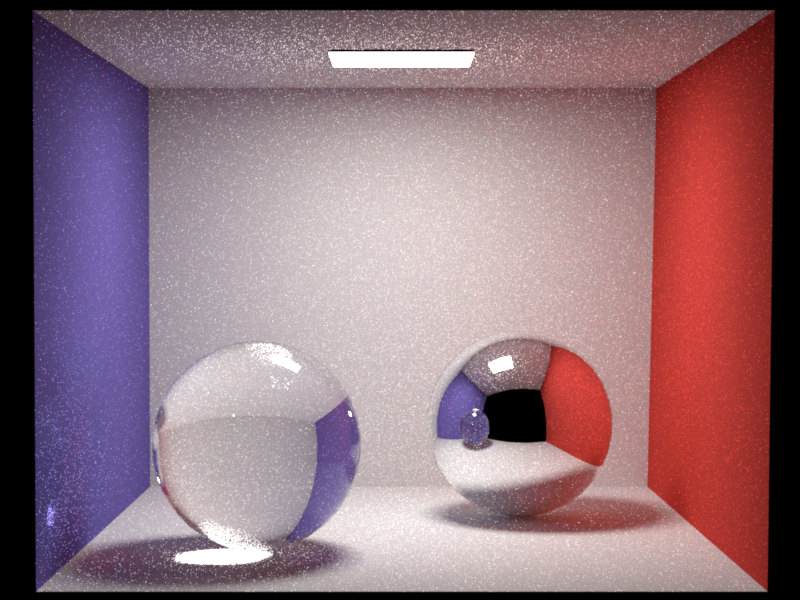

Assignment 5
Part 1
第一部分，我们需要将microfacet.cpp里的微表面模型BRDF补充完整，用来模拟类似塑料的材质。它由漫反射BRDF和粗糙电介质BRDF线性组合而成。完整BRDF公式是：
f r ( ω i , ω o ) = k d π + k s D ( ω h ) F ( ( ω h ⋅ ω i ) , η e , η i ) G ( ω i , ω o , ω h ) 4 cos θ i cos θ o cos θ h , ω h = ( ω i + ω o ) ∣ ∣ ω i + ω o ∣ ∣ 2 f_r({\omega_i},{\omega_o}) = \frac{k_d}{\pi} + {k_s} \frac{D({\omega_{h}})~
F\left({({\omega_h} \cdot {\omega_i})}, \eta_{e},\eta_{i}\right)~
G({\omega_i},{\omega_o},{\omega_{h}})}{4 \cos{\theta_i} \cos{\theta_o}\cos\theta_h}, ~~
{\omega_{h}} = \frac{\left({\omega_i} + {\omega_o}\right)}{\left|\left|{\omega_i} + {\omega_o}\right|\right|_2}
f r ( ω i , ω o ) = π k d + k s 4 cos θ i cos θ o cos θ h D ( ω h ) F ( ( ω h ⋅ ω i ) , η e , η i ) G ( ω i , ω o , ω h ) , ω h = ∣ ∣ ω i + ω o ∣ ∣ 2 ( ω i + ω o )
其实就是Lambert漫反射和Cook-Torrance高光结合在一起。k d ∈ [ 0 , 1 ] 3 k_d \in [0,1]^3 k d ∈ [ 0 , 1 ] 3 k s = 1 − max ( k d ) k_s = 1 - \max(k_d) k s = 1 − max ( k d )
F就是菲涅尔项，作业4介绍过了，直接拿过来用就行
nori选择的法线分布项和几何遮蔽项是Beckmann，对应公式是：
G ( ω i , ω o , ω h ) = G 1 ( ω i , ω h ) G 1 ( ω o , ω h ) G({\omega_i},{\omega_o},{\omega_{h}}) = G_1({\omega_i},{\omega_{h}})~G_1({\omega_o},{\omega_{h}})
G ( ω i , ω o , ω h ) = G 1 ( ω i , ω h ) G 1 ( ω o , ω h )
G 1 ( ω v , ω h ) = χ + ( ω v ⋅ ω h ω v ⋅ n ) { 3.535 b + 2.181 b 2 1 + 2.276 b + 2.577 b 2 , b < 1.6 , 1 , b ≥ 1.6 G_1({\omega_v},{\omega_h}) =\chi^+\left(\frac{\omega_v\cdot\omega_h}{\omega_v\cdot n}\right)
\begin{cases}
\frac{3.535b+2.181b^2}{1+2.276b+2.577b^2}, & b \lt 1.6, \\
1, & b \ge 1.6
\end{cases}
G 1 ( ω v , ω h ) = χ + ( ω v ⋅ n ω v ⋅ ω h ) { 1 + 2.276 b + 2.577 b 2 3.535 b + 2.181 b 2 , 1 , b < 1.6 , b ≥ 1.6
b = ( α tan θ v ) − 1 , χ + ( c ) = { 1 , c > 0 , 0 , c ≤ 0 , b = (\alpha \tan{\theta_v})^{-1}, ~~
\chi^+(c) =
\begin{cases}
1, & c > 0, \\
0, & c \le 0,
\end{cases} \\
b = ( α tan θ v ) − 1 , χ + ( c ) = { 1 , 0 , c > 0 , c ≤ 0 ,
D ( ω h ) = e − t a n 2 θ h α 2 π α 2 c o s 4 θ h D(\omega_h) = \frac{e^\frac{-{tan}^2\theta_h}{\alpha^2}}{\pi\alpha^2{cos}^4\theta_h}
D ( ω h ) = π α 2 cos 4 θ h e α 2 − t an 2 θ h
其中，G 1 G1 G 1 θ v \theta_v θ v n n n ω v \omega_v ω v
知道了BRDF计算公式后，还需要推导出采样公式，这部分中我们需要使用以下概率密度函数生成样本（这个就是pdf公式）：
k s D ( ω h ) J h + ( 1 − k s ) cos θ o π k_s ~ D(\omega_h) ~ J_h + (1-k_s) \frac{\cos{\theta_o}}{\pi}
k s D ( ω h ) J h + ( 1 − k s ) π cos θ o
其中，J h = ( 4 ( ω h ⋅ ω o ) ) − 1 J_h = (4 (\omega_h \cdot \omega_o))^{-1} J h = ( 4 ( ω h ⋅ ω o ) ) − 1 ω o \omega_o ω o
通过比较均匀分布的随机变量ξ 1 \xi_1 ξ 1 k s k_s k s
变换并偏移随机变量ξ 1 \xi_1 ξ 1 DiscretePDF::sampleReuse）（意思就是直接CV233 ）
如果是漫反射，按照 src/diffuse.cpp 中的方法在球体上生成余弦加权方向
如果是高光反射
使用作业3中实现的Warp::squareToBeckmann采样一个法线
使用此法线反射入射方向以生成出射方向
现在，所有拼图都有了，我们可以将microfacet.cpp补充完整了
1 2 3 4 5 6 7 8 9 10 11 12 13 14 15 16 17 18 19 20 21 22 23 24 25 26 27 28 29 30 31 32 33 34 35 36 37 38 39 40 41 42 43 44 45 46 47 48 49 50 51 52 53 54 55 56 57 58 59 60 static float DistributeBeckmann (const Vector3f& wh, float alpha) float tanTheta = Frame::tanTheta (wh);float cosTheta = Frame::cosTheta (wh);float a = std::exp (-(tanTheta * tanTheta) / (alpha * alpha));float b = M_PI * alpha * alpha * std::pow (cosTheta, 4.0f );return a / b;static float G1 (const Vector3f& wv, const Vector3f& wh, float alpha) float c = wv.dot (wh) / Frame::cosTheta (wv);if (c <= 0 ) {return 0 ;float b = 1.0f / (alpha * Frame::tanTheta (wv));return b < 1.6f ? (3.535f * b + 2.181f * b * b) / (1.f + 2.276f * b + 2.577f * b * b) : 1 ;Color3f eval (const BSDFQueryRecord& bRec) const {normalized ();auto cosThetaI = Frame::cosTheta (bRec.wi);auto cosThetaO = Frame::cosTheta (bRec.wo);auto d = DistributeBeckmann (wh, m_alpha);auto g = G1 (bRec.wi, wh, m_alpha) * G1 (bRec.wo, wh, m_alpha);auto f = fresnel (wh.dot (bRec.wi), m_extIOR, m_intIOR);return m_kd / M_PI + m_ks * ((d * f * g) / (4.0f * cosThetaI * cosThetaO));float pdf (const BSDFQueryRecord& bRec) const if (bRec.wo.z () <= 0 ) {return 0 ;normalized ();float d = DistributeBeckmann (wh, m_alpha);float jacobian = 1 / (4.0f * abs (wh.dot (bRec.wo)));return m_ks * d * Frame::cosTheta (wh) * jacobian + (1 - m_ks) * Frame::cosTheta (bRec.wo) * INV_PI;Color3f sample (BSDFQueryRecord& bRec, const Point2f& _sample) const {if (Frame::cosTheta (bRec.wi) <= 0 ) {return Color3f (0.0f );if (_sample.x () > m_ks) { Point2f sample ((_sample.x() - m_ks) / (1.f - m_ks), _sample.y()) ;squareToCosineHemisphere (sample);else { sample (_sample.x () / m_ks, _sample.y ());squareToBeckmann (sample, m_alpha);2.0f * wh.dot (bRec.wi) * wh) - bRec.wi).normalized ();if (bRec.wo.z () < 0.f ) {return Color3f (0.0f );return eval (bRec) * Frame::cosTheta (bRec.wo) / pdf (bRec);
首先来验证下代码正确性
Part 2
第二部分，我们需要实现最原始的暴力路径追踪，说是暴力，其实是因为对材质表面采样，光线能不能碰到光源全靠运气，采样结果会有很多噪点
在whitted-style光追中我们只实现了直接光照，即从摄像机发射一条射线，反射一次到光源。现在我们要加上环境光，也就是从摄像机发射一条射线，在场景中多次碰撞后最终射入光源，这种只生成一条光线，连结视点和光源的路径的算法就是路径追踪。
路径追踪是一个递归算法，nori建议我们使用循环代替递归。我们可以用一个临时变量保存光线和表面交互时，该表面对最终结果的贡献
递归算法需要终止条件，不然会无限递归下去，但是不可以直接停止递归而什么都不做，会造成能量丢失使结果不准确。这里引入俄罗斯轮盘赌（Russian Roulette）来决定光线什么时候停止递归。如果还能继续递归，要将路径贡献除以概率保证结果正确。nori建议至少递归3次再进行轮盘赌，以减少噪音
在src中创建path_mats.cpp
1 2 3 4 5 6 7 8 9 10 11 12 13 14 15 16 17 18 19 20 21 22 23 24 25 26 27 28 29 30 31 32 33 34 35 36 37 38 39 40 41 42 43 44 45 46 47 48 49 50 51 #include <nori/integrator.h> #include <nori/scene.h> #include <nori/emitter.h> #include <nori/sampler.h> #include <nori/bsdf.h> class PathMats : public Integrator {public :PathMats (const PropertyList& props) {}Color3f Li (const Scene* scene, Sampler* sampler, const Ray3f& _ray) const override {0 ;1 ;float probability;int depth = 1 ;while (true ) {if (!scene->rayIntersect (rayRecursive, its))break ;if (its.mesh->isEmitter ()) {EmitterQueryRecord lRecE (rayRecursive.o, its.p, its.shFrame.n) ;getEmitter ()->eval (lRecE);if (depth >= 3 ) {min (t.maxCoeff (), 0.99f );if (sampler->next1D () > probability)break ;BSDFQueryRecord bRec (its.shFrame.toLocal(-rayRecursive.d)) ;getBSDF ()->sample (bRec, sampler->next2D ());Ray3f (its.p, its.toWorld (bRec.wo));return color;std::string toString () const {return "PathMats[]" ;NORI_REGISTER_CLASS (PathMats, "path_mats" );
看看结果
Part 3
暴力追踪的结果噪音很大，一个解决办法就是whitted-style里已经实现过的光源重要性采样，这同样适用于路径追踪，基本原理在作业4分析过了，直接上代码吧
在path_ems.cpp
1 2 3 4 5 6 7 8 9 10 11 12 13 14 15 16 17 18 19 20 21 22 23 24 25 26 27 28 29 30 31 32 33 34 35 36 37 38 39 40 41 42 43 44 45 46 47 48 49 50 51 52 53 54 55 56 57 58 59 60 61 62 63 64 65 66 #include <nori/integrator.h> #include <nori/scene.h> #include <nori/emitter.h> #include <nori/sampler.h> #include <nori/bsdf.h> class PathEms : public Integrator {public :PathEms (const PropertyList& props) {}Color3f Li (const Scene* scene, Sampler* sampler, const Ray3f& _ray) const override {0 ;1 ;float probability;int depth = 1 ;int isDelta = 1 ;while (true ) {if (!scene->rayIntersect (rayRecursive, its))break ;if (its.mesh->isEmitter ()) {EmitterQueryRecord lRecE (rayRecursive.o, its.p, its.shFrame.n) ;getEmitter ()->eval (lRecE) * isDelta;if (its.mesh->getBSDF ()->isDiffuse ()) {auto light = scene->getRandomEmitter (sampler->next1D ());EmitterQueryRecord lRec (its.p) ;getEmitter ()->sample (light, lRec, sampler);if (scene->rayIntersect (lRec.shadowRay)) {0 ;float cosTheta = Frame::cosTheta (its.shFrame.toLocal (lRec.wi));BSDFQueryRecord bRec (its.toLocal(-rayRecursive.d), its.toLocal(lRec.wi), ESolidAngle) ;getBSDF ()->eval (bRec);0 ;else {1 ;if (depth >= 3 ) {min (t.maxCoeff (), 0.99f );if (sampler->next1D () > probability)break ;BSDFQueryRecord bRec (its.shFrame.toLocal(-rayRecursive.d)) ;getBSDF ()->sample (bRec, sampler->next2D ());Ray3f (its.p, its.toWorld (bRec.wo));return color;std::string toString () const {return "PathEms[]" ;NORI_REGISTER_CLASS (PathEms, "path_ems" );
Part 4
既然对BRDF采样和对光源采样都有缺陷，我们可以将它们结合起来。
https://zhuanlan.zhihu.com/p/360420413
个人理解的多重重要性采样，其实是将两种采样方法都试一次，然后按照启发公式来叠加两种pdf
nori建议使用的启发公式：
w L i g h t ( p L i g h t , p B R D F ) = p L i g h t p L i g h t + p B R D F w_\mathrm{Light}(p_\mathrm{Light}, p_\mathrm{BRDF}) = \frac{p_\mathrm{Light}}{p_\mathrm{Light} + p_\mathrm{BRDF}}
w Light ( p Light , p BRDF ) = p Light + p BRDF p Light
w B R D F ( p L i g h t , p B R D F ) = p B R D F p L i g h t + p B R D F w_\mathrm{BRDF}(p_\mathrm{Light}, p_\mathrm{BRDF}) = \frac{p_\mathrm{BRDF}}{p_\mathrm{Light} + p_\mathrm{BRDF}}
w BRDF ( p Light , p BRDF ) = p Light + p BRDF p BRDF
翻了很多文章和资料，关于为什么它是正确的（看不懂），不过不影响我们使用它（
还有一个重要的点，两种pdf必须以同样的度量表示，不能一个是立体角，一个是单位面积
1 2 3 4 5 6 7 8 9 10 11 12 13 14 15 16 17 18 19 20 21 22 23 24 25 26 27 28 29 30 31 32 33 34 35 36 37 38 39 40 41 42 43 44 45 46 47 48 49 50 51 52 53 54 55 56 57 58 59 60 61 62 63 64 65 66 67 68 69 70 71 72 73 74 75 76 77 78 79 80 81 82 83 84 #include <nori/integrator.h> #include <nori/scene.h> #include <nori/emitter.h> #include <nori/sampler.h> #include <nori/bsdf.h> class PathMisIntegrator : public Integrator {public :PathMisIntegrator (const PropertyList& props) {}Color3f Li (const Scene* scene, Sampler* sampler, const Ray3f& ray) const override {0 ;1 ;float probability;float w_mats = 1.0f ;int depth = 1 ;if (!scene->rayIntersect (rayRecursive, its)) {return color;while (true ) {if (its.mesh->isEmitter ()) {EmitterQueryRecord lRec (rayRecursive.o, its.p, its.shFrame.n) ;getEmitter ()->eval (lRec);const Mesh* mesh = scene->getRandomEmitter (sampler->next1D ());const Emitter* light = mesh->getEmitter ();EmitterQueryRecord lRec (its.p) ;sample (mesh, lRec, sampler) * scene->getEmitters ().size ();float pdf_em = light->pdf (mesh, lRec);if (!scene->rayIntersect (lRec.shadowRay)) {float cosTheta = std::max (0.f , Frame::cosTheta (its.shFrame.toLocal (lRec.wi)));BSDFQueryRecord bRec (its.toLocal(-rayRecursive.d), its.toLocal(lRec.wi), ESolidAngle) ;getBSDF ()->eval (bRec);float pdf_mat = its.mesh->getBSDF ()->pdf (bRec);float w_ems = pdf_mat + pdf_em > 0.0f ? pdf_em / (pdf_mat + pdf_em) : pdf_em;if (depth >= 3 ) {min (t.maxCoeff (), 0.99f );if (sampler->next1D () > probability) {return color;BSDFQueryRecord bRec (its.shFrame.toLocal(-rayRecursive.d)) ;getBSDF ()->sample (bRec, sampler->next2D ());Ray3f (its.p, its.toWorld (bRec.wo));float pdf_mat = its.mesh->getBSDF ()->pdf (bRec);if (!scene->rayIntersect (rayRecursive, its)) {return color;if (its.mesh->isEmitter ()) {EmitterQueryRecord (origin, its.p, its.shFrame.n);float new_pdf_em = its.mesh->getEmitter ()->pdf (its.mesh, newLRec);0.f ? pdf_mat / (pdf_mat + new_pdf_em) : pdf_mat;if (bRec.measure == EDiscrete) {1.0f ;return color;std::string toString () const {return "PathMisIntegrator[]" ;NORI_REGISTER_CLASS (PathMisIntegrator, "path_mis" );
